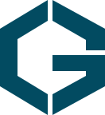

GAON직원 포털가온주택관리 직원 전용 업무 공간
오늘의 업무를
시작하세요.
직원 계정으로 로그인하면
담당 건물과 연결된 업무를 확인할 수 있습니다.
회사 서버에 연결하고 있습니다.
로그인하면 기본 브라우저가 열리고, 끝나면 GAON으로 돌아옵니다.
계정 등록이나 접근 권한은 가온 관리자에게 문의해 주세요.

GAON직원 포털가온주택관리 직원 전용 업무 공간
직원 계정으로 로그인하면
담당 건물과 연결된 업무를 확인할 수 있습니다.
회사 서버에 연결하고 있습니다.
로그인하면 기본 브라우저가 열리고, 끝나면 GAON으로 돌아옵니다.
계정 등록이나 접근 권한은 가온 관리자에게 문의해 주세요.